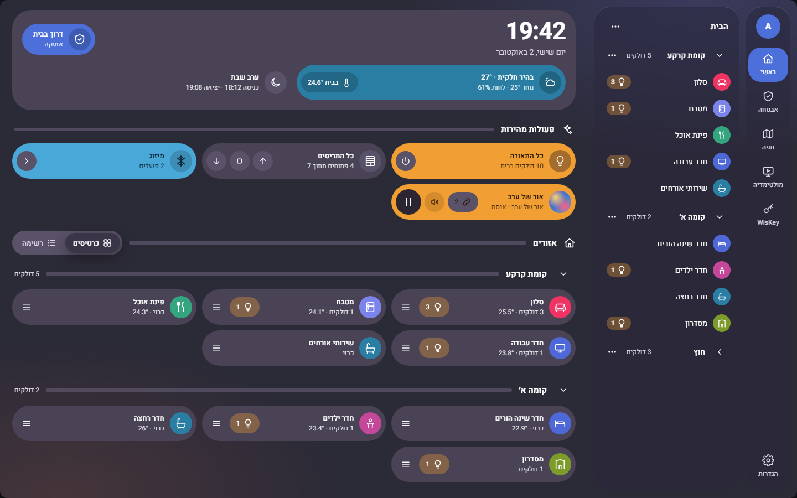
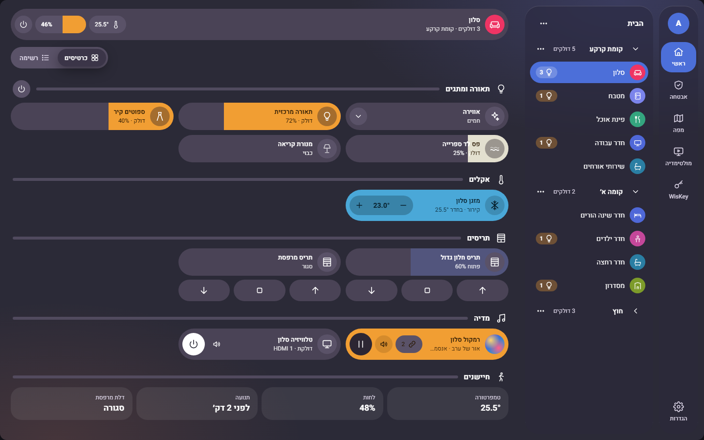
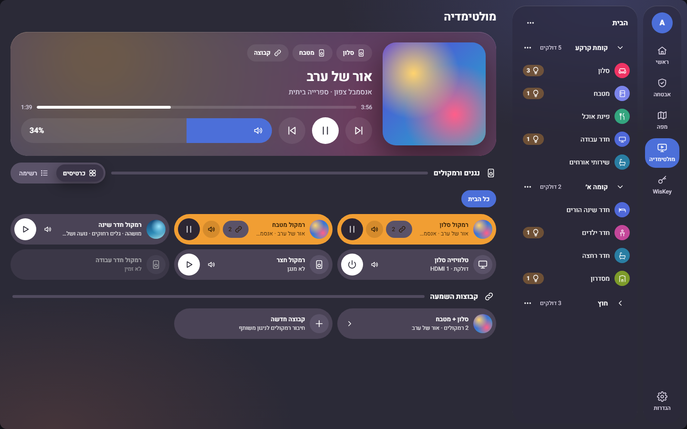

1 · ביתכרטיס מצב, פעולות מהירות, אזורים (כרטיסים | רשימה), חלון אזור, בחירת אזור, אישור כיבוי
2 · אזור + חלון קופץתאורה כסליידר, מזגן, תריסים, מדיה, אווירה (רשימה נפתחת), חלון התקן שקוף
3 · מדיהמתנגן עכשיו מעל עטיפה מטושטשת, נגנים (כרטיסים | רשימה), עוצמה, קבוצת השמעהdata-bubble-surface): מילוי · גרדיאנט · זכוכיתdata-bubble-density): רחב · רגיל · דחוס · שורות